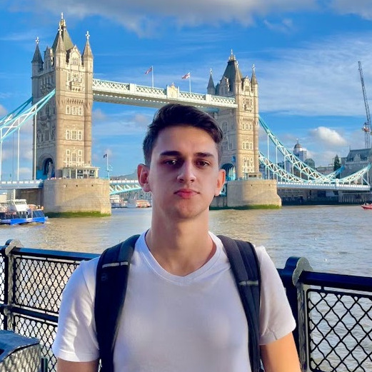

<app-navbar></app-navbar>
<div class="view jarallax main-container" style="height: 100vh;">
  
  <div>
    <h2>Interactive Resume</h2>
    <h1 data-text="Gabriel Madeira">Gabriel Madeira</h1>
  </div>
</div>

<div class="container" id="about">
  <div class="row">
  <div class="col-sm-12 text-center section-title" >ABOUT</div>
  <div class="col-md-3 col-sm-4 offset-md-2 offset-3 col-6 offset-sm-0" >
    
  </div>
  <div class="col-10 offset-1 offset-sm-0 col-md-5 col-sm-8 text-justify about-span">
    <span>Hey, I'm Gabriel,</span>
    <span style="color: #2d80c4;">Computer Science Student 💻</span>
    <span>@ Federal University of Rio Grande do Sul 🏛</span>
    <span>located in Porto Alegre - RS 🇧🇷</span>
    <a href="#" class="fa fa-download">
      <span style="font-size: 14px; display: inline;"> Resume</span></a
    >
    <a
      href="https://www.linkedin.com/in/gabriel-madeira"
      target="_blank"
      class="fa fa-linkedin"
    ></a>
    <a
      href="https://www.instagram.com/gabr.madeira"
      target="_blank"
      class="fa fa-instagram"
    ></a>
    <a
      href="mailto:gabr.madeira@gmail.com"
      target="_blank"
      class="fa fa-envelope"
    ></a>
  </div>
</div>
</div>

<div class="container-fluid container-var" id="experiences">
  <div class="col text-center section-title">EXPERIENCES</div>
  <div class="col text-center subsection-title">Education</div>
  <app-card
    imgUrl="assets/images/ufrgs.png"
    title="Computer Science Undergraduate"
    institution="Federal University of Rio Grande do Sul"
    period="March 2020 - Now (Graduating in December 2023)"
    location="Porto Alegre - RS - Brazil"
    description=""
  ></app-card>
  <app-card
    imgUrl="assets/images/furg.png"
    title="Computer Engineering Undergraduate"
    institution="Federal University of Rio Grande (FURG)"
    period="March 2019 - Dezember 2019"
    location="Rio Grande - RS - Brazil"
    description=""
  ></app-card>
  <app-card
    imgUrl="assets/images/furg.png"
    title="Information Systems Undergraduate"
    institution="Federal University of Rio Grande (FURG)"
    period="March 2018 - Dezember 2018"
    location="Rio Grande - RS - Brazil"
    description=""
  ></app-card>
  <app-card
    imgUrl="assets/images/qwertye.png"
    title="Technical course - Computing Technician"
    institution="Qwerty Escola"
    period="March 2015 - Dezember 2016"
    location="Dom Pedrito - RS - Brazil"
    description=""
  ></app-card>
  <div class="col text-center subsection-title">Work Experience</div>
  <app-card
    imgUrl="assets/images/ginfo.png"
    title="Undergraduate Researcher"
    institution="Information Management Research Group - FURG"
    period="April 2016 - July 2017"
    location="Rio Grande - RS - Brazil"
    description=""
  ></app-card>
  <app-card
    imgUrl="assets/images/qwertyp.png"
    title="Computer Technician"
    institution="Qwerty News Portal"
    period="April 2016 - July 2017"
    location="Dom Pedrito - RS - Brazil"
    description=""
  ></app-card>
</div>

<div class="container-fluid" id="skills">
  <div class="col text-center section-title">SKILLS</div>
  <div class="col text-center">
    <app-skills></app-skills>
  </div>
</div>